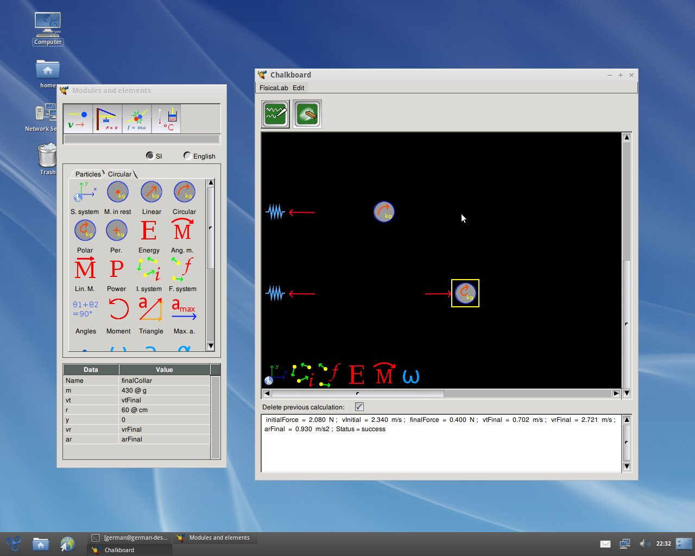

|
 FisicaLab (can be pronounced as PhysicsLab) is an educational application to solve physics problems. Its main objective is let the user to focus in physics concepts, leaving aside the mathematical details (FisicaLab take care of them). This allows the user to become familiar with the physical concepts without running the risk of getting lost in mathematical details. And so, when the user gain confidence in applying physical concepts, will be better prepared to solve the problems by hand (with pen and paper). The latest release of FisicaLab have the following modules:
The source tarball of FisicaLab can be found on the main GNU ftp server: http://ftp.gnu.org/gnu/fisicalab/ (via HTTP) and ftp://ftp.gnu.org/gnu/fisicalab/ (via FTP). It can also be found on the GNU mirrors; please use a mirror if possible.
There are some binaries and additional ways you can download or obtain FisicaLab.
Documentation for FisicaLab is available as PDF.
FisicaLab has the following mailing lists:
Announcements about FisicaLab and most other GNU software are made on info-gnu (archive).
Development of FisicaLab, and GNU in general, is a volunteer effort, and you can contribute. For information, please read How to help GNU. If you'd like to get involved, it's a good idea to join the discussion mailing list (see above).
FisicaLab is free software; you can redistribute it and/or modify it under the terms of the GNU General Public License as published by the Free Software Foundation; either version 3 of the License, or (at your option) any later version.
{kind=link}